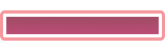

Type Function Library widget.* Return value ProgressViewWidget Revision Release 2024.3703 Keywords widget, progress, progressView, progressIndicator See also ProgressViewWidget
Creates a ProgressViewWidget object.
To conserve texture memory, a ProgressViewWidget can only be created from an image sheet.
ProgressViewWidget objects do not support scaling nor changing the width/height via .width or .height.
widget.newProgressView( options )
This function takes a single argument, options, which is a table that accepts the following parameters:
String. An optional identification to assign to the progress view. Default is widget_progressView.
Numbers. Coordinates for the widget’s x and y center point. These values will be overridden by left and top if those values are defined.
Numbers. The left and top position where the widget will be created. If specified, these values override the x and y parameters.
Number. The overall width of the progress view.
Boolean. Set this to true if the progress change should be animated, false (or omitted) if the progress change should occur instantly.
Number. Set this to horizontally offset the fill region of the progress view. Default is 0.
Number. Set this to vertically offset the fill region of the progress view. Default is 0.
The progress view widget can be visually customized using an image sheet. As shown in the following example, 6 frames can be used to assemble an outer border and an inner fill bar. The outer border consists of the left cap (red), the middle span (green), and the right cap (yellow). The inner fill region consists of a left cap (orange), a middle span (blue), and a right cap (purple).
Depending on the width of the progress view, the outer border caps remain at the size stated in the image sheet and the middle frame (green) stretches to fill the width between. When the progress is set to any value higher than 0.0, the inner left cap and right cap become visible. Then, depending on the current percentage, the middle fill span (blue) stretches to fill the distance between the two caps.
| → |  |
ImageSheet. The image sheet object for the progress view.
Number. The frame index for the outer border left cap.
Number. The frame index for the outer border middle span.
Number. The frame index for the outer border right cap.
Numbers. The width/height of the outer border frames. All border frames should share the same width and height.
Number. The frame index for the inner fill left cap.
Number. The frame index for the inner fill middle span.
Number. The frame index for the inner fill right cap.
Numbers. The width/height of the inner fill frames. All fill frames should share the same width and height.
local widget = require( "widget" )
-- Create the widget
local progressView = widget.newProgressView(
{
left = 50,
top = 200,
width = 220,
isAnimated = true
}
)
-- Set the progress to 50%
progressView:setProgress( 0.5 )
local widget = require( "widget" )
-- Image sheet options and declaration
-- For testing, you can copy/save the image under "Visual Customization" above
local options = {
width = 64,
height = 64,
numFrames = 6,
sheetContentWidth = 384,
sheetContentHeight = 64
}
local progressSheet = graphics.newImageSheet( "widget-progress-view.png", options )
-- Create the widget
local progressView = widget.newProgressView(
{
sheet = progressSheet,
fillOuterLeftFrame = 1,
fillOuterMiddleFrame = 2,
fillOuterRightFrame = 3,
fillOuterWidth = 64,
fillOuterHeight = 64,
fillInnerLeftFrame = 4,
fillInnerMiddleFrame = 5,
fillInnerRightFrame = 6,
fillWidth = 64,
fillHeight = 64,
left = 50,
top = 200,
width = 220,
isAnimated = true
}
)
-- Set the progress to 50%
progressView:setProgress( 0.5 )